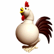
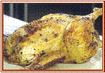
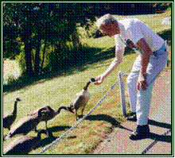
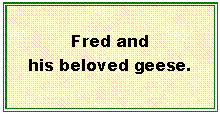

|
CLICK (gently!) on Granny's
|
 |
to close this page.
|
FOWL STORIES AND A BIG SNEEZE
The "Cluck" Ran Out Of LuckWhite Rock's UNofficial Goose Herder
A Big Sneeze


THE "CLUCK" RAN OUT OF LUCK
Was the chicken

When you feel half dead, read about this unfortunate hen, and you will immediately come back to life! When I was a child, I lived in Vancouver's inner city. Here, many Chinese had warehouse-like markets where you could buy fresh produce and select a live chicken to be butchered. The chickens were cooped up in little wire-framed pens, which lined the austere walls. First, the buyer eyed the chickens up and down; a chicken was selected, and the buyer felt it (if she was not squeamish at touching a live chicken) to feel if it was plump.
After the chicken was chosen, the happy merchant took it to the back of the warehouse and deftly dispatched the unfortunate bird to never-never land. I recall the unpleasant odours which accompanied the ritual of scalding the bird to remove its feathers, and the stench of unwanted entrails. The chicken was wrapped in newspaper, and the buyer ensured that he/she got home before blood or juices soaked through the paper. In due time, the desired smell of roast chicken permeated the air, and the market-place scenario was forgotten. In the more aristocratic sections of Vancouver, chickens were purchased at local butcher stores. They were not cut into selective pieces, nor was it frozen. The discriminating shopper carefully inspected fowl to make sure it was fresh and not foul! (Pun intended!)
Following my mother's untimely death, I lived with my Grandma for four years. Her married son (my Uncle) lived two doors away. One day, a door-to-door salesman persuaded my Uncle to order a chicken, fresh from the farm. The price was right; however on the night of delivery, he advised the seller to deliver the chicken to my grandmother's house because he was not going to be home. The chicken was duly delivered to Grandma, and she placed the wrapped-in-newspaper chicken in a separate small room called a pantry. "Hmm," mused Grandma. "I should have ordered a chicken, too. This one feels so heavy and plump. Charlie got a bargain."
That evening, I attended a youth meeting. Back then, we either walked, took a streetcar, or cycled to church - one person in the youth group owned a car. On this particular evening, I had gone to church on my bike, but opted to walk home, while a chivalrous young man gallantly wheeled the bike for me. The basement in my Grandma's house was built on ground level, so I left Pete at the back entrance while I went into the house and down the stairs to open the basement door in order to store my bike. After assisting with the bike, Pete went his way, and I sat for awhile to talk with Grandma.
As we were conversing, a garbled noise was heard. "Viola," remarked Grandma Roe, "I think your friend Pete is outside making those funny noises." Pete was always playing a prank, but when I looked out a back window - no Pete was to be seen. About fifteen minutes later, we heard the same noise. No Pete. Another fifteen minutes elapsed, and the noise reoccurred. Where was it coming from? "It sounds as if the noise is coming from the pantry," said Grandma, and she went into the pantry to inspect. In a startled voice, Grandma shouted, "Come quickly!"
The two of us looked at the scene with shock and disbelief. No wonder the chicken was so heavy. It had not been stripped of its feathers nor had its innards been cleaned out. City people never bought chickens in that condition. When they ordered a chicken from a farmer, they naturally expected the chicken to be thoroughly cleaned and ready to put in the oven. With consternation, we looked at the pathetic scene. The poor chicken's throat had just been partially severed, and with its languishing strength, it had pecked its head out of the corner of the wrappings. The head hung over the edge of the counter. Every so often the suffering creature cawed a gurgling noise - the sound we had been hearing all evening. "What do we do?" I asked with a helpless feeling.
"I don't know what to do," responded Grandma Roe. "We will have to wait until Charlie comes to get the chicken." It was another hour before Charlie finally came to claim his prize chicken, but he turned absolutely white when he knew that he would have to finish off the chicken to put it out of its agony. He had lived in a city all his life, so contact with a live chicken posed a problem. Gallantly, I encouraged Charlie. "We'll go to the basement, and I will hold the chicken while you wield the axe."
The midnight scene in the basement was uncanny. Dark shadows created a gloomy and ghostly atmosphere. Keeping the chicken in its newspaper wrapping, except for its poor head dangling out of one corner, I gingerly held its body, and Charlie took aim with the axe. (Yes, I prayed that Charlie would hit the chicken and not me.) Believe it or not, it took three, yes, three blows before the head finally took leave of the body. (Farmer friends shake their heads in disbelief at such inept butchering. They would have decapitated the chicken with one stroke of the blade. Well, not all farmers - one had goofed that day.) A pale-faced Charlie stood back and surveyed his dastardly deed.
AND THEN . . . something occurred which no city dweller had ever seen. The headless chicken fluttered its way out of the newspaper and flapped in an erratic fashion around the basement, finally coming to a still, dead stop. I screamed and sought a corner. Charlie backed up and up and up, well out of range of the ghoulish chicken. The eerie scene could have come from the pages of an Alfred Hitchcock thriller!
After we had recovered from the frightful scene, Charlie bundled up the chicken and took it home. Neither of us slept very well with all that excitement rippling through us. The next morning, the unfortunate chicken was taken to his office - just as it was, feathers, innards (except for the head), and he said, "Here is a chicken. If anyone wants it, it's yours. But I don't want to see it any more." And yes, one of the workers claimed the chicken and later reported that it tasted really great.
Throughout the years I have related the above incident to many of our farm friends, and they just roll with laughter at the two helpless city slickers.
A half-dead chicken? No way!
Our choice is a dead one, served with lots of gravy! |
 |
WHITE ROCK'S UNOFFICIAL GOOSE HERDER
The Peace Arch News, White Rock, BC, May 2000:
White Rock Square One is pleased to announce
the arrival of seven goslings.
Parents and babies are doing well.
We do not know who placed the ad in the paper, but we do live in the condo building called "White Rock Square One." Using his binoculars, Fred would go onto the roof of the building and watch Father Gander and Mother Goose on their nest, which was built on the section of the roof where people are not supposed to walk. However, one day a gosling fell from the roof, so an onlooker summoned the SPCA. They proceeded to net the remaining goslings and tossed them off the roof to the ground. One of the goslings was injured. At the back of our condo is a mini-park, and that is where the goslings ended up. Fred thought the park was too dangerous for the little ones-a lot of people go through it; there are dogs around; irresponsible youth often frequent the park. So he went to the roof and chased Mama and Papa down to join their family. He then proceeded to "herd" the family to another park-like setting, approximately four short blocks away. If you do not know White Rock, the condo is located in the heart of the business section. Because we are on a T street, we do not have too much traffic going to the main avenue of the City, nearly two blocks away.
Fred directed the feathered family - Mother Goose led the way, followed by the seven goslings, with Father Gander in the rear. Whenever the geese wanted to veer in another direction, Fred would call out, "No, don't go there." And the geese obeyed! They crossed our less-busy T street and plodded through a block-long parking lot. They then had to cross the very busy street of 16th Avenue. Fred rose to the occasion. With much hand-gesturing, he stopped the traffic in both directions, and to the amazement and delight of the car drivers, the feathered family waddled across the street with Fred's ever-encouraging words. The injured gosling was limping badly, but when Fred tried to pick it up, the protective gander flew at him and hissed. About half-way down the block, the outskirts of the tiny park came in sight-that is, the heavily wooded section. Fred said, "No, you can't go in there." Once again, the geese obeyed. A little farther down, the open space of the park appeared, where there are several man-made, reed-ringed ponds.
"Okay - go for it," Fred announced to his new creature-friends. And the geese obeyed. When they saw the water, that was "heaven" to them. Mission accomplished, Fred came home feeling very elated about his newest retirement hobby. He went back every day to check on his friends, and Mother Goose ate rolled oats from his hand. The Gander remained more reserved. However, the injured gosling disappeared within a few days, doubtless the victim of a predator.
I reported the story to the Peace Arch News, and a staff reporter interviewed Fred on the telephone. On May 17, the reporter in his own words told the story under the headline:
GREENER PASTURE FOUND FOR WHITE ROCK GAGGLE
The article was a refreshing change from the usual murder and mayhem stories found in newspapers nowadays. But here is our personal comment as to why Fred handled the "goose" incident so admirably. This was not published in the article. You see, when Fred and I are on really good terms with each other (which is most of the time), I call him in German, "Du alter esel." (You old donkey!) He reciprocates by calling me, "Du Dumme Gans." (You dumb goose.) He has had 58 years of marriage with a "dumme gans" and so no wonder he is an expert at "herding" a goose around. After 58 years of dealing with me, herding the geese was a piece of cake! And now I pine at home alone as he spends time with the "honk-honks" - my husband has left me for a real goose.
Each year the geese have returned to build their nest on one of the condo buildings in our area. They evidently remember Fred, for they will flutter across the street or off the building to partake of the delicious rolled oats he has for them. When they have finished nesting, they now go on their own to the little park. If other people are in the park, the geese ignore them and come running to Fred.
|  |  |
A BIG SNEEZE
"Gesundheit" is a German expression, similar to the English "God Bless You," uttered after someone emits a hearty sneeze.
In one of the Pahls' parsonages, the manse's tiny kitchen somehow made room for the tall bird cage which housed a pet budgie. All was well between man and bird until Fred frightened the hapless bird with one of his specialty loud sneezes. So loud was Fred's sneeze that Viola dropped a kitchen utensil she was holding; Susan cried out loud in terror, and the poor feathered creature, with wings spread out, flopped to the bottom of its cage as if it had been struck by a bolt of lightning. It faintly fluttered its wings and with open beak, literally "panted" for breath. In due time, everyone recovered, but they admonished Fred to never, never eject a "ten on the Richter scale" sneeze in the small kitchen.
On one occasion, Fred discovered a marvellous way to awaken a sleepy congregation. He was wearing a lapel microphone with the volume turned on high when his Vesuvius-like sneeze erupted. Suffice to say, it stunned everyone, including preacher Pahl!
|
CLICK (gently!) on Granny's
|
|
to close this page.
|